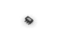

The intention of ASF is to provide a rich set of proven drivers and code modules developed by Atmel experts to reduce customer design-time. It simplifies the usage of microcontrollers, providing an abstraction to the hardware and high-value middlewares.
ASF is a free and open-source code library designed to be used for evaluation, prototyping, design and production phases.
|  |
ASF is code-size-optimized:
» Multiple ANSI-C compilers supported. |
|
ASF is performance-optimized:
» DMA for communication. |
|
ASF is low-power-optimized:
» Clock masking API, Sleep management API. |
ASF consists of source code modules and applications demonstrating the use of these.
Drivers is composed of a driver.c and driver.h file that provides low level register interface functions to access a peripheral or device specific feature. The services and components will interface the drivers.
Services is a module type which provides more application oriented software such as a USB classes, FAT file system, architecture optimized DSP library, graphical library, etc.
Components is a module type which provides software drivers to access external hardware components such as memory (e.g. Atmel DataFlash®, SDRAM, SRAM, and NAND flash), displays, sensors, wireless, etc.
Boards contains mapping of all digital and analog peripheral to each I/O pin of Atmel's development kits.
The documentation is offered as HTML (these pages). The documentation is generated using Doxygen, and all the Doxygen tags/comments are therefore in the source code, also to make it possible for you to reuse this documentation in your own project if desired.
ASF is currently oriented towards Atmel Studio www.atmel.com/atmelstudio, since it contains so much code that it can be hard to navigate in it manually. Atmel Studio is offering a helping hand through the use of wizards, filters and documentation.
For those of you who do not want to use Atmel Studio, you can download and use ASF as a stand-alone package, see the download page. Note that ASF also supports IAR and have IAR project files for all projects.